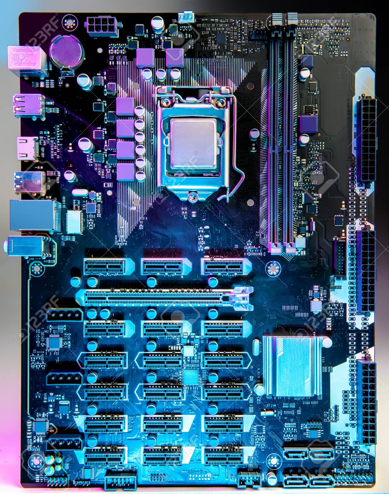
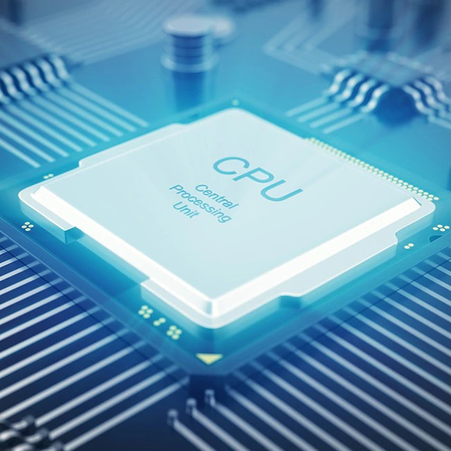
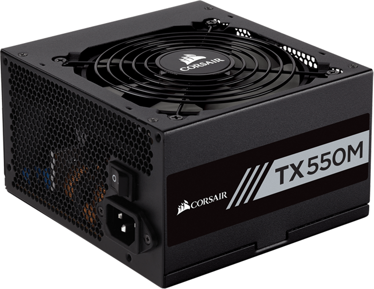

such as the motherboard, graphics card, and CPU (Central Processing Unit), venting fans, webcam, electricity distribution, etc.
Computer hardware is the physical elements a computer program needs to operate. It
encompasses everything using a circuit board which works in just a PC or notebook;
such as the motherboard, graphics card, and CPU (Central Processing Unit), venting
fans, webcam, electricity distribution, etc.
Even though the plan of hardware is different because of their differences in dimension involving notebooks and PCs, exactly the core elements will be located in either. There would not be any means of conducting. Software is defined as the digital applications that operate on your own pc; this will be, operating system, web browser, word-processing files, etc.
Though a computer may operate when applications and hardware are still all functioning the
hardware will be most relied on by the rate of a machine.
When establishing a computer, or just replacing components that are old, you might have to be
familiar with particular hardware. This guide’s objective is to assist you to realize the inner-workings
of your PC.
The motherboard is in the middle of what constitutes a PC function. It can be a heart that hardware runs via and houses both the CPU. The functions as a mind; communicating allocating electricity where it is required and coordinating throughout the rest of the parts.
It is important to assess what hardware interfaces the motherboard provides when picking a motherboard. It is crucial to assess just how many USB interfaces, and what quality (USB 2.0, 3.0, 3.1) there, and what screen ports are utilized (HDMI, DVI, RGB) and the number of each you will find. The interfaces on the motherboard may help you specify like what kind of graphics card and RAM you are able to utilize, what hardware will be compatible with your personal computer.
It is to a different among the parts of hardware: the chip, Even though the motherboard is 1 part of the circuitry. 
The CPU ( Central Processing Unit or chip ) is in charge of processing all data from programs run from the PC. The’clock speed’,and also the rate in which the chip processes advice, is  measured in gigahertz (GHz). This usually means that a chip advertising a GHz score will perform quicker than a processor of an era and the brand. CPU is called the brain of our computer because it accepts data, provides temporary memory space to it until it is stored(saved) on the hard disk, performs logical operations on it and hence processes (here also means converts) data into information. We all know that a computer consists of hardware and software.Software is a set of programs that performs multiple tasks together. An operating system is also a software (system software) that helps humans to interact with the computer system.
Random Access Memory, or RAM, is hardware contained at the motherboard’s memory card. RAM’s part would be to do this in a means which makes this information accessible and to save advice.
The tasks which need arbitrary memory could function; making pictures for graphic layout, edited movie or
photos, multi-tasking with numerous programs open (as an instance, conducting a game on a single display
and chatting through Discord on another).
RAM’s part would be to do this in a means which makes this information accessible and to save advice.
The tasks which need arbitrary memory could function; making pictures for graphic layout, edited movie or
photos, multi-tasking with numerous programs open (as an instance, conducting a game on a single display
and chatting through Discord on another).
Just how much RAM you need is dependent upon the applications which you’ll be running. The layout can use up of 16GB, although intensity gambling utilizes 8GB of memory once done along with other applications.
The hard disk is a storage apparatus for keeping information that is temporary and permanent accountable. This information comes in several forms however is anything set up or stored into a computer: as an instance, functioning system, computer applications, family photographs and so on.
There are two distinct forms of storage devices: the classic hard disk drive (HDD) and also the more recent quad-core pushes (SSD). Hard disk drives operate by writing information on disks called even though a drive stores information by utilizing flash memory processors that are static.
Essential for 3D rendering, the GPU does precisely what its title procedures and indicates batches of images data. You’ll realize your computer’s graphics card contains at least. Rather than the graphics capacities that PC motherboards provide graphics cards interface machine to operate exclusively on images. This means if you would like to have a little more performance from the 21, that you may update your graphics card.
Beyond producing, which makes them an extension into the central processing device, Additionally, but GPUs meet a wide capacity.
A power distribution unit does supply electricity to your personal pc. It’s the point at which the motherboard to part hardware enters your system and then allocates electricity. Not many power supplies are created evenly and without the wattage PSU, your machine will fail to do the job.
Even though the magnitude of this PSU will depend upon the energy consumption of the machine A computer will desire a PSU that is ranked between 500W — 850W to efficiently electricity all of the components. Computers which are used for intensive tasks like gambling or design will require a PSU to appeal to the demand that is extra and will demand elements.
Without the ideal amount of electricity, parts will not have the ability to run and crashes might be experienced by the pc or just fail to boot up. It is suggested to have. From having a PSU if you upgrade to PC components that are more 26, would you shield yourself but you yourself.
Recognizing your personal computer and its hardware elements can prove to be helpful once the time is to update or replace some components, or if constructing a pc. Should an issue arise with the inner workings of your own computer, you’ll get a better comprehension of the significance of each element, the demand for these to maintain the good working condition and also the way to begin solving any difficulties.